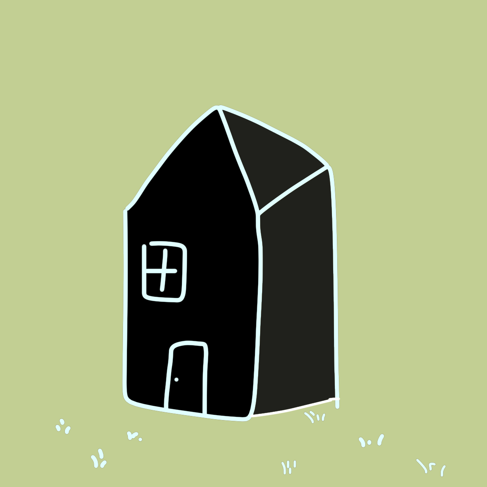
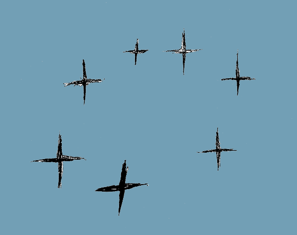

| TESTIMONIALS |
|  SAM: I have been dealing with mice for years… yes years. They seem to not even care about their being food anymore. They just enjoy the warmth of my house. I do live in Northern Canada so I understand the need for warmth but there is a line to who I let live in my home. I tried everything from the classic mouse trap all the way to sonic blasts. Nothing seemed to work until…. I got mouse no more. This product not only solved my mouse problem, but it introduced me to such a nice man. Rick Sullaway is a hero in my mind. |
| KEVIN: I don’t have mice, but I do have squirrels and the “and more” of this website is very much true. My squirrels have turned into my best friends. |
|  SHELLY: After months of emailing back and forth, Rich Sullaway himself came to my house to apply his product. He is the most gentle giant I have ever met…. If you have mice but don’t want to kill them and maybe even save them then you MUST get this product. |
| GERARD: This product works... but is it worth the price? And I'm not talking the whopping twenty dollars you have to spend on this. I'm talking the toxicity of the product. I sprayed it near my garden and two weeks later. Dead. Everything! It must have been this product. |
| BRIAN: Will have to agree with you Gerard. I spilled my mouse no more the other day and my cat started licking it up. Now I have a dead cat. BE WARNED. |
 COLIN: Not sure what ya'll are talking about. I just watched the video regarding the safeness of the product and it seems pretty safe.... COLIN: Not sure what ya'll are talking about. I just watched the video regarding the safeness of the product and it seems pretty safe.... |
| SHELLY: I saw the video but how are we supposed to know he didn't just fill that spray bottle with water and green food dye to make it appear that it was the mouse no more recipe?? Or how do we know he didnt use special effects to make it seem that he licked the mouse no more? I don't trust videos these days. |
| CLEATUS: I have been dealing with mice for years… yes years. They seem to not even care about their being food anymore. They just enjoy the warmth of my house. I do live in Northern Canada so I understand the need for warmth but there is a line to who I let live in my home. I tried everything from the classic mouse trap all the way to sonic blasts. Nothing seemed to work until…. I got mouse no more. This product not only solved my mouse problem, but it introduced me to such a nice man. Rick Sullaway is a hero in my mind. |
| KIM: Works for me. |